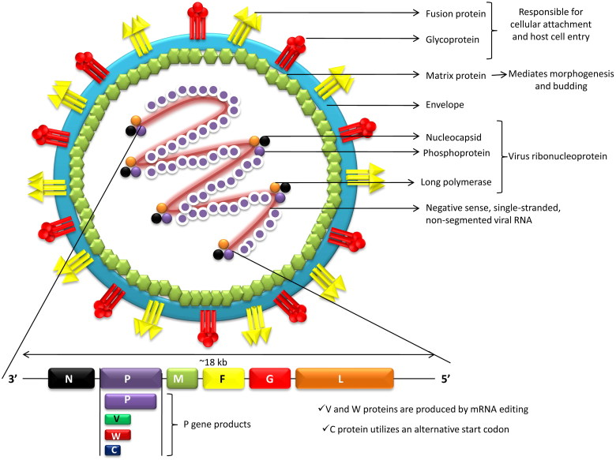
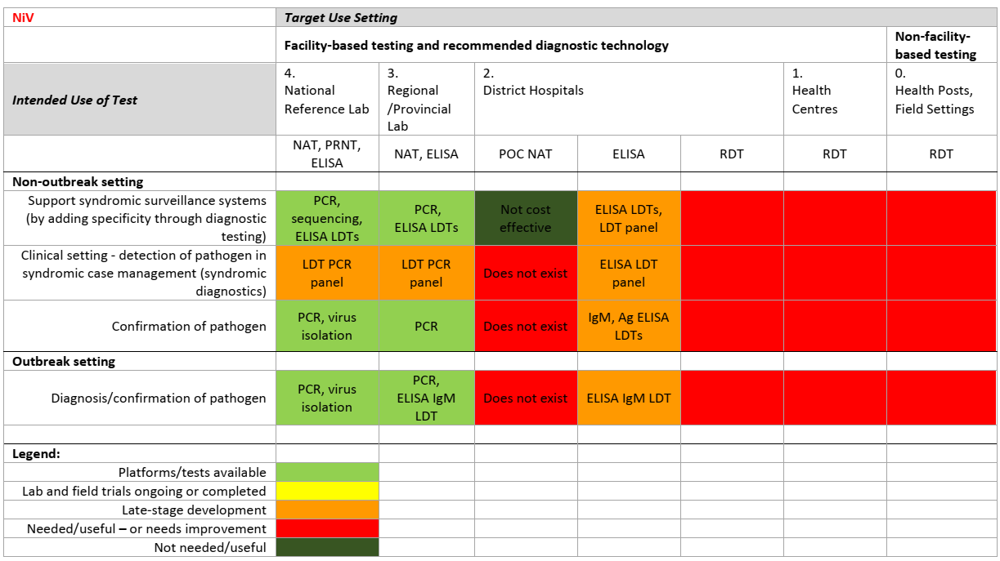

VIRUS NIPAH
Từ viết tắt
-
BSL: biosafety level- mức độ an toàn sinh học ;
-
IFA: immunofluorescence assay- xét nghiệm miễn dịch huỳnh quang;
-
LDT: laboratory-developed test- thử nghiệm do phòng thí nghiệm phát triển;
-
NAAT: nucleic acid amplification test- xét nghiệm khuếch đại axit nucleic;
-
NiV: virus Nipah;
-
POC: point of care -- Xét nghiệm tại chỗ;
-
RDT: rapid diagnostic test - xét nghiệm chẩn đoán nhanh.
-
MOI: Multiplicity of infection -Tỉ lệ gây nhiễm virus
- Đặc điểm virus Nipah
NiV gây viêm não nặng ở người, đặc trưng bởi viêm mạch và hoại tử hệ thần kinh trung ương (CNS). Thời gian ủ bệnh của NiV thường là 4--14 ngày. NiV chủ yếu ảnh hưởng đến hệ thần kinh trung ương thông qua nhiễm trùng tế bào nội mô, mạch máu và nhu mô, với tốc độ nhân lên của virus cao trong tế bào thần kinh [1]. Hiên nay có ít nhất hai dòng chính NiV lưu hành ở các khu vực khác nhau:
NiV-Malaysia (NiV-M) -- chủng được phát hiện đầu tiên trong đợt bùng phát ở Malaysia (Cuối thập niên 1990).
NiV-Bangladesh (NiV-B) -- chủng lưu hành ở Bangladesh và Ấn Độ, thường có tỷ lệ tử vong cao hơn và dễ lan truyền giữa người hơn so với chủng Malaysia.
- Cấu trúc virus Nipah
Virus Nipah (NiV) là một loại paramyxovirus (chi Henipavirus, phân họ Paramyxovirinae, họ Paramyxoviridae, bộ Mononegavirales), một loại virus mới nổi có thể gây bệnh hô hấp nghiêm trọng và viêm não dẫn đến tử vong ở người. Bộ gen virus RNA chuỗi đơn, sợi âm không phân đoạn, có vỏ bọc, có tính đối xứng xoắn ốc. Bộ gen RNA từ 3\'-5\', chứa sự sắp xếp liên tiếp của 6 gen mã hoá protein cấu trúc vi rút gồm nucleocapsid (N), phosphoprotein (P), chất nền (M), glycoprotein dung hợp (F), glycoprotein gắn kết (G) và Protein lớn (L) hay RNA polymerase. N, P và L gắn vào RNA virus tạo thành ribonucleoprotein virus (vRNP). Các protein F và G chịu trách nhiệm gắn kết virion vào tế bào và xâm nhập vào tế bào chủ sau đó. Tiền chất protein F (F0) được phân cắt thành hai tiểu đơn vị F1 và F2, bởi protease của vật chủ. Peptide tổng hợp của vi rút có trong tiểu đơn vị F1 thúc đẩy phản ứng tổng hợp màng tế bào của vi rút và vật chủ để vi rút xâm nhập. Protein M của virus làm trung gian hình thành và nảy chồi. Kháng thể kháng protein G rất cần thiết để trung hòa sự lây nhiễm NiV. Tương tác giữa ephrins loại B (thụ thể virus) trên tế bào chủ và NiV glycoprotein (G) kích hoạt những thay đổi về hình dạng sau này, dẫn đến kích hoạt glycoprotein F và phản ứng tổng hợp màng. Nhiều protein phụ được mã hóa bởi Henipavirus hỗ trợ khả năng trốn tránh miễn dịch của vật chủ [2].

{width="5.7214785651793525in" height="4.272771216097988in"}Hình 1: Cấu trúc virus Nipah [2].
Virion NiV có kích thước lớn (đường kính 500 nm) so với các paramyxovirus khác (đường kính 150--400 nm), với sự khác biệt lớn về kích thước (180--1900 nm), nhưng có hầu hết các đặc điểm hình thái điển hình. [3].
1.2 Cơ chế gây bệnh của vi rút Nipah
Virus xâm nhập vào vật chủ qua đường mũi--miệng và gây nhiễm. Vì mô người mới chỉ được nghiên cứu ở giai đoạn cuối của bệnh nên vị trí nhân lên ban đầu chưa rõ. Tuy nhiên, nồng độ kháng nguyên cao trong mô lympho và mô hô hấp cho thấy đây có thể là các vị trí nhân lên đầu tiên.
Giai đoạn virus huyết sớm (viraemia) giúp virus lan rộng, sau đó là sự nhân lên thứ phát ở tế bào nội mô. Glycoprotein G của NiV gắn với thụ thể tế bào Ephrin-B2 (thụ thể thay thế là Ephrin-B3). Thụ thể này biểu hiện nhiều trên tế bào nội mô và cơ trơn, đặc biệt nhiều ở não, tiếp theo là phổi, nhau thai, tuyến tiền liệt, và mạch máu ở nhiều mô khác. Sự phân bố thụ thể này giải thích các biểu hiện lâm sàng và bệnh lý của bệnh.
Ephrin-B2 đóng vai trò quan trọng trong chuyển đổi của nguyên bào thần kinh trong quá trình phát triển phôi. Do đó, nó được bảo tồn cao giữa các lớp động vật khác nhau, và mức độ tương đồng thụ thể giữa dơi và lợn đạt khoảng 95--96%. Điều này dẫn đến phổ vật chủ rộng của NiV.
Hệ thần kinh trung ương bị xâm nhập chủ yếu qua đường máu, mặc dù đã có bằng chứng về sự xâm nhập trực tiếp qua dây thần kinh khứu giác trong mô hình lợn.
Độc lực cao của NiV được cho là do khả năng né tránh đáp ứng miễn dịch bẩm sinh. Các sản phẩm của gen P đã được chứng minh là ức chế hoạt động của interferon. Một nghiên cứu khác cho thấy NiV còn ức chế sự sản xuất interferon, nhưng ít ảnh hưởng đến tín hiệu truyền của interferon.
- Sự sống sót của virus Nipah trong môi trường
Virus Nipah có thể tồn tại tới 3 ngày trong một số loại nước trái cây hoặc quả xoài và ít nhất 7 ngày trong nhựa chà là nhân tạo (13% sucrose và 0,21% BSA trong nước, pH 7,0) được giữ ở 22°C. Có rất ít dữ liệu về động học của virus, nhưng mẫu phết họng cho thấy có khoảng 10^3^ - 10^4^ bản sao của NiV trong các trường hợp nặng và 10^6^ trong các trường hợp cấp tính ở người. Các kết quả tương tự cũng được thấy ở máu và huyết thanh động vật, có tới 10^10^ bản sao được phát hiện trong mô não động vật. Virus có thời gian bán hủy là 18 giờ trong nước tiểu của dơi ăn quả. NiV tương đối ổn định trong môi trường và vẫn tồn tại ở nhiệt độ 70°C trong 1 giờ (chỉ nồng độ virus sẽ giảm). Nó có thể bị bất hoạt hoàn toàn khi đun nóng ở 100°C trong hơn 15 phút. Tuy nhiên, khả năng tồn tại của virus trong môi trường tự nhiên có thể khác nhau tùy thuộc vào các điều kiện khác nhau. NiV có thể dễ dàng bị bất hoạt bởi xà phòng, chất tẩy rửa và chất khử trùng có bán trên thị trường như natri hypoclorit [2].
- Động học chuyển đổi huyết thanh của virus Nipah
Kháng thể IgM kháng NiV có thể được phát hiện trong máu của phần lớn bệnh nhân sau một tuần và dịch não tủy 10--15 ngày sau khi xuất hiện các dấu hiệu lâm sàng. Việc phát hiện virus trong CSF có liên quan đến tỷ lệ tử vong cao. IgG kháng NiV có thể được phát hiện trong máu vào ngày thứ 17--18 ở tất cả các bệnh nhân [3].
- Các loại bệnh phẩm
Các mẫu phải được thu thập ở các bệnh nhân (nghi ngờ hoặc có triệu chứng khi tiếp xúc với Nipah) càng sớm càng tốt với biện pháp phòng ngừa an toàn sinh học. Mẫu bệnh phẩm ở người thường là dịch họng và mũi, dịch não tủy, nước tiểu và máu. Ở động vật, NiV đã được phát hiện trong dịch tiết đường hô hấp, máu, nước tiểu, phân và các mô cơ quan, với bằng chứng cho thấy NiV ban đầu lây nhiễm vào hệ hô hấp, sau đó lan truyền vào hệ thần kinh ở giai đoạn sau [1].
Việc lấy mẫu chỉ nên được thực hiện SAU KHI NHẬP VIỆN ở các bệnh viện có khu vực cách ly và đảm bảo rằng nhân viên thực hiện việc lấy mẫu tuân thủ các biện pháp kiểm soát lây nhiễm thích hợp. Trong quá trình lấy mẫu, nhân viên y tế phải đeo đầy đủ Thiết bị bảo hộ cá nhân dùng một lần (mặt nạ N 95, găng tay phẫu thuật đôi, áo choàng, tấm che chân bằng kính bảo hộ, v.v.). Rửa tay bằng xà phòng và nước ít nhất trong 30 giây, sau đó làm sạch tay bằng chất khử trùng tay chứa cồn trước và sau khi lấy mẫu.
- Các mẫu bệnh phẩm
-
Mẫu phết họng hoặc ngoáy mũi trong môi trường vận chuyển virus
-
Nước tiểu (≥ 5 ml) trong hộp đựng vô trùng đa năng
-
Máu (3-5ml) trong ống nắp đỏ
-
Dịch não tủy (1-2 ml) trong hộp vô trùng
-
Mô cơ quan.
- Vận chuyển và bảo quản mẫu
Mẫu bệnh phẩm phải được đóng gói an toàn theo nguyên tắc 3 lớp và phải được vận chuyển an toàn trong dây chuyền lạnh (2-8°C) đến phòng thí nghiệm thử nghiệm và phải thông báo trước nếu chúng có thể đến phòng thí nghiệm trong vòng 48 giờ; nếu thời gian vận chuyển trên 48 giờ, mẫu phải được gửi đông lạnh ở nhiệt độ -20°C.
- Chẩn đoán xét nghiệm
Các dấu hiệu và triệu chứng ban đầu của nhiễm virus Nipah thường không đặc hiệu, do đó chẩn đoán thường không được nghĩ đến ngay từ đầu. Điều này gây khó khăn cho việc chẩn đoán chính xác, phát hiện sớm ổ dịch, triển khai các biện pháp kiểm soát nhiễm khuẩn kịp thời và đáp ứng dịch.
Ngoài ra, chất lượng, số lượng, loại bệnh phẩm, thời điểm lấy mẫu cũng như thời gian vận chuyển mẫu đến phòng thí nghiệm đều ảnh hưởng đáng kể đến độ chính xác của kết quả xét nghiệm.Chẩn đoán phòng thí nghiệm đối với bệnh nhân có tiền sử lâm sàng nghi ngờ nhiễm virus Nipah (NiV) có thể được thực hiện ở cả giai đoạn cấp tính và giai đoạn hồi phục của bệnh thông qua việc kết hợp nhiều phương pháp xét nghiệm. Việc lựa chọn kỹ thuật xét nghiệm phụ thuộc vào thời điểm lấy mẫu, tình trạng lâm sàng của bệnh nhân và loại bệnh phẩm sẵn có.
Trong giai đoạn sớm của bệnh, các phương pháp phát hiện trực tiếp tác nhân gây bệnh đóng vai trò then chốt. Phân lập virus và phản ứng chuỗi polymerase thời gian thực (RT-PCR) nên được tiến hành trên các bệnh phẩm như dịch ngoáy họng và mũi, dịch não tủy, máu và nước tiểu. Đây là những mẫu bệnh phẩm có khả năng chứa tải lượng virus cao trong pha cấp tính, giúp tăng độ nhạy trong chẩn đoán xác định.
Vì các triệu chứng của nhiễm NiV tương tự như các bệnh sốt khác nên việc chẩn đoán sớm là rất quan trọng để ngăn chặn đợt bùng phát và tạo điều kiện chăm sóc bệnh nhân thích hợp. Mặc dù PCR được khuyến nghị là phương pháp nhạy cảm nhất để chẩn đoán nhiễm NiV, ELISA phát hiện IgM đặc hiệu với NiV là một phương pháp huyết thanh thay thế khi không có PCR hoặc trong gian đoạn muộn của bệnh. hóa mô miễn dịch được sử dụng sau khi khám nghiệm tử thi để xác nhận chẩn đoán NiV trong các trường hợp tử vong. Trong khi đó các kỹ thuật như :phân lập và trung hòa virus thường được sử dụng cho mục đích khẳng định và kỹ thuật này được thực hiện trong phòng an toàn sinh học cấp 3 trở lên [1].
Bảng 1: Ưu nhược điểm của các kỹ thuật chẩn đoán virus Nipah [1]
Loại xét nghiệm Yêu cầu về cơ sở hạ tầng Yêu cầu đào tạo Thời gian thực hiện Đối tượng In-house/ prototype Sản phẩm thương mại
Phân lập, trung hòa virus CAO/BSL-4\ CAO\ 5 ngày nuôi cấy tế bào Con người,\ >3 0 (PXN tham chiếu) (KTV có tay nghề) động vật
NAAT CAO\ CAO\ 2--3 giờ\ Con người,\ >5 3 (PXN tham chiếu) (KTV có tay nghề) (chuẩn bị 1--2 giờ) động vật
NAAT POC TRUNG BÌNH\ VỪA PHẢI\ 1--2 giờ Con người, động vật 0 0 (bệnh viện huyện) (Kỹ thuật viên PXN)
ELISA, IFA CAO đến TRUNG BÌNH\ VỪA PHẢI\ 3--4 giờ Con người,\ >5 1\ (PXN khu vực, bệnh viện huyện) (Kỹ thuật viên PXN) động vật (chỉ thuốc thử)
RDT THẤP\ THẤP\ \<30 phút Con người,\ 0 0 (phòng khám, trung tâm y tế, cơ sở thực địa) (Y tá, nhân viên y tế) động vật
Hiện nay, phần lớn các phòng thí nghiệm quốc tế đều sử dụng xét nghiệm NiV nội bộ. Tuy nhiên, mức độ đánh giá thử nghiệm rất khác nhau. Hiện có một số ít bộ kit PCR thương mại và chỉ gồm hóa chất (không phải bộ kít hoàn chỉnh/được đánh giá) để xét nghiệm ELISA [1].
Việc thu thập bệnh phẩm nên được tiến hành ở giai đoạn sớm của bệnh, thường bao gồm ngoáy họng và mũi, dịch não tủy, nước tiểu và máu. Ở động vật, NiV đã được phát hiện trong dịch tiết đường hô hấp, máu, nước tiểu, phân và các mô cơ quan cho thấy virus xâm nhập ban đầu qua hệ hô hấp, sau đó lan tỏa vào hệ thần kinh ở giai đoạn muộn. Dữ liệu về động học virus hiện còn hạn chế; tuy nhiên, các nghiên cứu trên mẫu ngoáy họng ở người cho thấy tải lượng NiV đạt khoảng 10³--10⁴ bản sao bộ gen trong các trường hợp nặng và lên tới 10⁶ bản sao trong giai đoạn cấp tính. Kết quả tương tự cũng được ghi nhận trong máu và huyết thanh động vật với tải lượng lên đến 10¹⁰ bản sao được phát hiện trong mô não động vật.
- Phân lập virus
Việc xác nhận nhiễm NiV ở người cũng như động vật có thể được thực hiện bằng cách phân lập virus cùng với việc thực hiện các xét nghiệm huyết thanh học và xét nghiệm để khuếch đại axit nucleic của virus..Việc thực hiện phân lập virus cần thực hiện trong phòng an toàn sinh học cấp 3 trở lên..
NiV tăng trưởng nhanh và đạt hiệu giá cao trong nhiều dòng tế bào nuôi cấy. Các tế bào thận khỉ xanh châu Phi (Vero) và thận thỏ (RK-13) được phát hiện là đặc biệt nhạy cảm. CPE thường xuất hiện trong vòng 3 ngày, tuy nhiên mẫu bệnh phẩm nên thực hiện cấy truyền 2 lần kéo dài 5 ngày trước khi kết luận mẫu âm tính. Thực hiện phân lập NiV với MOI thấp, CPE được hình thành có thể dưới dạng hợp bào sau 24--48 giờ. Các hạt nhân trong hợp bào do NiV trưởng thành được phân bố xung quanh bên ngoài tế bào khổng lồ. Sau khi nuôi cấy, Việc xác định sự tăng sinh virus trong quá trình nuôi cấy có thể được thực hiện bằng một trong các kỹ thuật như miễn dịch huỳnh quang, trung hòa huyết thanh và PCR dịch nổi nuôi cấy, kính hiểm vi điện tử,....
- Xét nghiệm huyết thanh học
Xét nghiệm huyết thanh học có thể phát hiện trực tiếp kháng nguyên NiV, cũng như kháng thể IgM và IgG được tạo ra khi nhiễm virus NiV. Nhìn chung, các xét nghiệm huyết thanh ít nhạy cảm hơn với những biến đổi di truyền nhỏ và phản ứng chéo rộng hơn trong các phân nhóm và chủng.
ELISA là công cụ sàng lọc đáng tin cậy, có độ nhạy cao và cho kết quả nhanh. Phương pháp này có khả năng phát hiện kháng thể IgM và IgG kháng NiV. Kháng thể IgM có thể được phát hiện ở khoảng 50% bệnh nhân ngay từ ngày đầu khởi phát bệnh, trong khi IgG thường xuất hiện sau ngày thứ 18 và có thể tồn tại trong nhiều tháng. Các xét nghiệm huyết thanh chẩn đoán NiV tự xây dựng (Inhouse) được trình bày trong bảng 2 [1].
ELISA bắt giữ kháng nguyên dựa trên kháng thể đơn dòng đã được báo cáo để phát hiện NiV cũng như để phân biệt nó với HeV. ELISA IgG gián tiếp đã được phát triển để xét nghiệm huyết thanh lợn và người, và ELISA thu giữ IgM sử dụng protein N tái tổ hợp của NIV cũng đã được báo cáo. Phương pháp ELISA sandwich sử dụng protein kháng NiV G đa dòng của thỏ đã được báo cáo và là một xét nghiệm nhanh để chẩn đoán bệnh. Lysate tế bào bị nhiễm có chứa kháng nguyên NiV có thể được sử dụng làm chất phủ để tiến hành ELISA. Phòng thí nghiệm Thú y Úc (AAHL) (Geelong) và Trung tâm Kiểm soát và Phòng ngừa Dịch bệnh ở Atlanta cung cấp các kháng nguyên như vậy.
Bảng 2: Xét nghiệm huyết thanh học nội bộ để tìm NiV [1]*
Loại khảo nghiệm Mục tiêu Phòng thí nghiệm tham khảo
ELISA NiV IgG, IgM ICDDRB và IEDCR (Bangladesh), CDC (Mỹ) ELISA Ab trung hòa NiV DVS (Malaysia) ELISA Protein NiV G Đại học Putra (Malaysia) Western blot, ELISA Protein NiV N, M Trung tâm khoa học sức khỏe con người và động vật Canada (Canada) ELISA Protein NiVN Trung tâm chẩn đoán bệnh động vật quốc gia Trung Quốc (Trung Quốc) ELISA Protein NiVN Viện Y học Nhiệt đới (Nhật Bản) ELISA Protein NiV/HeV P CSIRO/AAHL (Úc), Đại học Malaya (Malaysia), Trung tâm Dịch tễ học Trung Quốc (Trung Quốc) ELISA Protein NiV/HeV N, HeV P CDC (Hoa Kỳ) ELISA Protein NiV/HeV G Viện truyền nhiễm quốc gia (Nhật Bản) ELISA Protein NiV M MARDI, Đại học Putra Malaysia, Đại học Monash Malaysia ELISA Protein NiVN Viện bệnh động vật an ninh cao quốc gia/ICAR (Ấn Độ) Thu thập kháng thể dựa trên hạt đa hạt Protein NiV G, HeV G CSIRO/AAHL (Úc), Đại học Khoa học Y tế Dịch vụ Đồng phục (Hoa Kỳ)
Tạp chí Virus học Ấn Độ Springer Nature , bản quyền 2013; và Trung tâm Dịch vụ Khách hàng Springer GmBH: Sách điện tử Springer Nature Springer , bản quyền 2012.
AAHL, Phòng thí nghiệm Thú y Australia; CDC, Trung tâm Kiểm soát và Phòng ngừa Dịch bệnh; CSIRO, Tổ chức Nghiên cứu Công nghiệp và Khoa học Khối thịnh vượng chung; DVS, Cục Thú y; HeV, virus Hendra; ICAR, Hội đồng Nghiên cứu Nông nghiệp Ấn Độ; ICDDRB, Trung tâm Nghiên cứu Bệnh Tiêu chảy Quốc tế, Bangladesh; IEDCR, Viện Dịch tễ học, Kiểm soát và Nghiên cứu Dịch bệnh; MARDI, Viện Nghiên cứu và Phát triển Nông nghiệp Malaysia; NiV, virus Nipah.
ELISA IgM thường là xét nghiệm chẩn đoán huyết thanh NiV đầu tiên, sau đó là xét nghiệm trung hòa huyết thanh hoặc PCR làm xét nghiệm xác nhận. Các protein tái tổ hợp, kháng thể đơn dòng hoặc đa dòng được sử dụng để tăng tính đặc hiệu của phản ứng
Loại mẫu: huyết thanh.\ Thời điểm: IgM từ ngày 1--7; IgG từ sau ngày 14--18.\ Mục tiêu: kháng thể IgM, IgG kháng NiV.\ Kit thương mại: Alpha Diagnostic Intl., Creative Diagnostics.
. Các xét nghiệm nhanh cũng được xây dựng để thực hiện chẩn đoán NiV. Các xét nghiệm nhanh cho kết quả nhanh hơn so với các phương pháp khác (10--30 phút) tuy nhiên test nhanh thường có độ nhạy phát hiện thấp hơn so với ELISA. Hiện nay chưa có test nhanh nào được thương mại hóa trên thị trường [1].
Kỹ thuật trung hòa là tiêu chuẩn vàng trong việc nhiễm NiV bằng phương pháp huyết thanh học. Phương pháp này được thực hiện trong phòng ATSH cấp 3 trở lên..Để khắc phục hạn chế này, các hạt vi rút giả không lây nhiễm có thể được sử dụng trong các thử nghiệm trung hòa trong phòng BSL-2. Các hạt giả NiV có nguồn gốc từ virus viêm miệng mụn nước hoặc lentachus (HIV), cung cấp một phương pháp xét nghiệm thuận tiện hơn để chẩn đoán xác nhận [1].
- Hóa mô miễn dịch (IHC)
Kháng thể kháng NiV đã được sử dụng để nhuộm các mô được cố định chính thức của hệ thần kinh trung ương, phổi, lá lách, hạch bạch huyết, thận và tim để phát hiện các kháng nguyên virus. Trên các lát cắt mô có thể xác định được các tổn thương liên quan đến NiV như bệnh phù thũng, hoại tử và viêm mạch.
Loại mẫu:Mô cố định formalin (não, phổi, thận, lách...)
Thời điểm lấy mẫu: Thường áp dụng cho trường hợp tử vong hoặc nghiên cứu bệnh học
Kháng nguyên mục tiêu: Protein cấu trúc của virus Nipah (thường là N hoặc G protein)
Ưu điểm: Giúp xác định vị trí và mức độ tổn thương mô do virus.
Hạn chế: Không dùng cho sàng lọc thường quy; cần phòng xét nghiệm giải phẫu bệnh đạt chuẩn an toàn.
- Các kỹ thuật sinh học phân tử
Các xét nghiệm khuếch đại acid nucleic (NAAT), điển hình là PCR, thường được ưu tiên sử dụng để phát hiện nhiễm virus đang hoạt động nhờ độ nhạy rất cao, có thể phát hiện chỉ từ 20 bản sao bộ gen virus. Tuy nhiên, yêu cầu về hạ tầng và trang thiết bị khiến các xét nghiệm này không phải lúc nào cũng khả thi tại các khu vực lưu hành dịch. Bên cạnh đó, độ nhạy của xét nghiệm có thể bị suy giảm nếu bộ gen virus xảy ra đột biến di truyền đáng kể hoặc khi các chủng mới khác biệt tại các vùng trình tự dùng để thiết kế mồi/probe. Do đó, để bảo đảm khả năng phát hiện các biến thể di truyền, probe PCR thường được thiết kế nhắm vào các vùng trình tự bảo tồn cao, ít biến đổi và hiện diện trong tất cả các chủng đã biết của tác nhân gây bệnh.
Các xét nghiệm RT-PCR phát hiện NiV chủ yếu nhắm vào các đoạn gen bảo tồn của N, M hoặc P. Nhiều định dạng PCR đã được phát triển, bao gồm RT-PCR thông thường, nested RT-PCR và rRT-PCR. Trong đó, rPCR thời gian thực cho thấy độ nhạy cao hơn khoảng 1.000 lần so với PCR thông thường và hiện nay gần như được sử dụng phổ biếntrong chẩn đoán NiV.
Tóm tắt Xét nghiệm PCR
- Loại mẫu:
+ Ngoáy họng / ngoáy mũi (throat swab, nasal/nasopharyngeal swab)
+ Máu toàn phần (EDTA) hoặc huyết thanh
+ Nước tiểu
+ Dịch não tuỷ (CSF)
+ Dịch hô hấp dưới (BAL, hút đờm -- trong trường hợp nặng)
- Thời điểm lấy mẫu:
+ Tối ưu trong giai đoạn cấp tính: từ ngày 0--7 sau khởi phát triệu chứng
+ Có thể phát hiện đến khoảng ngày 14, tuỳ tải lượng virus và loại mẫu
- Gen mục tiêu:
+ Gen N (nucleocapsid) -- được sử dụng phổ biến nhất do tính bảo tồn cao
+ Ngoài ra có thể sử dụng gen P, M hoặc L trong một số bộ mồi
Cho đến nay, giải trình tự toàn bộ bộ gen đã được thực hiện đối với các chủng NiV-B và NiV-M (bao gồm các phân chủng), cũng như các biến thể được ghi nhận tại Campuchia và Philippine.
Ngoài ra, các kỹ thuật giải trình tự thế hệ mới (next-generation sequencing -- NGS) và giải trình tự sâu (deep sequencing) cho phép đọc trực tiếp toàn bộ bộ gen virus, giúp xác định virus và phân nhóm (clade) mà không cần biết trước thành phần trình tự.Tuy nhiên, do tính phức tạp và chi phí cao, các kỹ thuật này không phù hợp cho sàng lọc số lượng lớn mẫu trong chẩn đoán thường quy. Dù vậy, đây là công cụ phân tích toàn diện và không thiên lệch, đặc biệt hữu ích trong nghiên cứu hồi cứu, cho phép xác định sự tiến hóa phát sinh chủng loại của virus theo thời gian và không gian địa lý
Các xét nghiệm multiplex PCR đã được phát triển trong phòng thí nghiệm để phát hiện đồng thời nhiều tác nhân gây bệnh hoặc nhiều clade virus, sử dụng các công nghệ như microarray, microcard hoặc microsphere. Công nghệ microsphere Luminex đã được ứng dụng để phát hiện và phân biệt các chủng virus Hendra (HeV) và NiV. Các xét nghiệm dựa trên microsphere này cho phép phân biệt rõ HeV và NiV, với độ nhạy phát hiện HeV tương đương với qPCR đơn lẻ.
Bên cạnh đó, công nghệ TaqMan array card multiplex, thường sử dụng microcard 384 giếng cho các phản ứng PCR đồng thời, đã được phát triển nhằm chẩn đoán phân biệt các nguyên nhân gây sốt cấp, bao gồm NiV, dưới dạng panel rRT-PCR 26 tác nhân và 21 tác nhân. Hiệu năng lâm sàng của các panel này cho thấy độ nhạy tổng thể đạt 86--88% và độ đặc hiệu 97--99% so với các xét nghiệm rPCR đơn lẻ. Panel 26 tác nhân bao gồm 15 virus, 8 vi khuẩn và 3 đơn bào, trong khi panel 21 tác nhân gây bệnh hệ thần kinh trung ương (CNS) bao gồm 2 ký sinh trùng, 6 vi khuẩn và 13 virus.
Ngoài các xét nghiệm acid nucleic, các nền tảng miễn dịch đa tác nhân (multiplex immunoassay) dựa trên công nghệ vi cầu Luminex cũng đã được phát triển cho chẩn đoán phân biệt HeV và NiV, sử dụng các microsphere được phủ protein G hòa tan của HeV và NiV. Hai dạng xét nghiệm đã được đánh giá: (i) xét nghiệm gắn kết để phân biệt kháng thể HeV và NiV, và (ii) xét nghiệm ức chế (blocking/inhibition) để phát hiện và phân biệt kháng thể trung hòa HeV và NiV. Ngược lại, ELISA thông thường không có khả năng phân biệt kháng thể giữa hai virus này.
Các xét nghiệm Luminex dựa trên microsphere cũng đã được sử dụng để phát hiện kháng thể henipavirus ở dơi ăn quả và lợn và gần đây được ứng dụng để đánh giá nhiễm HeV trên chuột thí nghiệm, người, cũng như ngựa và chó.
- Chẩn đoán phân biệt [4]
Ở người, các chẩn đoán phân biệt chính cần được xem xét là sốt rét, sốt phát ban sông Nhật Bản, leptospirosis, sốt xuất huyết, viêm màng não do Herpes, viêm màng não do vi khuẩn, viêm não Nhật Bản, sởi và bệnh dại.
-
Những thách thức đối với chẩn đoán NiV [1].
- Sự đa dạng của virus và động học và động lực lây nhiễm [1].
Xét nghiệm chẩn đoán NiV lý tưởng sẽ phát hiện tất cả các dòng NiV trên tất cả các vùng có độ nhạy như nhau; tuy nhiên, nhiều xét nghiệm PCR ban đầu được phát triển từ các chủng Bangladesh--Ấn Độ (NiV-B) hoặc Malaysia-- Singapore (NiV-M). Do đó, chẩn đoán NiV có thể được hưởng lợi từ bộ đầu dò pan-NiV dựa trên sự đồng thuận. Ngoài ra, cần thêm thông tin về động học virus và miễn dịch của NiV để xác định cơ chế bệnh sinh của NiV trong các mẫu máu và không phải máu. Hiểu được quá trình nhiễm NiV ở các giai đoạn khác nhau của bệnh sẽ giúp xác định cơ hội để can thiệp hiệu quả và theo dõi quá trình lây truyền và phục hồi tốt hơn [1].
- Xác nhận lâm sàng
Đối với các nhà phát triển xét nghiệm chẩn đoán, mẫu bệnh phẩm là chìa khóa cho quá trình xác nhận; tuy nhiên, việc xác nhận các xét nghiệm NiV đã bị hạn chế do thiếu huyết thanh dương tính với NiV. Mặc dù các mẫu động vật có thể được sử dụng để nghiên cứu các đặc điểm hiệu suất của xét nghiệm, nhưng có nguy cơ là các kháng nguyên được tìm thấy trong các trường hợp nhiễm NiV có nguồn gốc từ động vật cụ thể không giống với các kháng nguyên được tìm thấy ở người hoặc động vật khác. Các Chế phẩm Tham chiếu Sinh học Quốc tế của WHO đóng vai trò là nguồn tham khảo để đảm bảo độ tin cậy của các quy trình chẩn đoán sinh học trong ống nghiệm và được phân phối bởi các phòng thí nghiệm giám sát của WHO. Khi các xét nghiệm chẩn đoán mới được phát triển, các cơ quan này có thể thực hiện giám sát đánh giá chất lượng bên ngoài (EQA) định kỳ bằng cách sử dụng bảng mẫu bệnh phẩm lâm sàng và tiêu chuẩn tham chiếu cập nhật. Vai trò này sẽ đặc biệt quan trọng khi các nhà phát triển thử nghiệm có ít động lực để tìm kiếm sự chấp thuận của cơ quan quản lý quốc tế [1].
- Các xét nghiệm tại chỗ
Với bối cảnh bùng phát NiV thường xuyên ở nông thôn và vùng sâu vùng xa, chẩn đoán nhạy cảm và chính xác về NiV phải có thể triển khai được trong nhiều trường hợp, đặc biệt là tại điểm xét nghiệm tại chỗ (POC). Các nền tảng NAAT POC và \'gần POC\' hiện tại có yêu cầu cơ sở hạ tầng thấp hơn so với chẩn đoán dựa trên phòng thí nghiệm, với việc chuẩn bị mẫu tự động dẫn đến ít yêu cầu đào tạo hơn cho nhân viên y tế và các định dạng dựa trên hộp mực cho phép các xét nghiệm độc lập. Do đó, chúng có thể được thực hiện dễ dàng hơn trong các phòng thí nghiệm phi tập trung hoặc các cơ sở tại hiện trường. Với phạm vi xét nghiệm đã được phát triển cho các nền tảng NAAT thương mại này, các xét nghiệm NiV PCR hiện tại có thể dễ dàng thích ứng với định dạng POC. [1].
RDT lý tưởng cho việc thử nghiệm tại hiện trường và các cơ sở có cơ sở hạ tầng thấp như phòng khám hoặc tại nhà. RDT đã được phát triển để sàng lọc và phân loại hiệu quả các trường hợp nghi ngờ có nguy cơ cao như Lassa, Ebola và sốt xuất huyết. Tương tự như Ebola, khả năng gây bệnh của NiV khiến việc xử lý mẫu vật trở thành một thách thức trong môi trường phi phòng thí nghiệm, do đó công việc sơ bộ trong việc phát triển ELISA kháng nguyên có thể đóng vai trò là điểm khởi đầu cho kháng nguyên NiV RDT. [1].
- Giám sát.
Các chiến dịch giáo dục có thể hữu ích để nâng cao nhận thức về nguy cơ nhiễm NiV trong cộng đồng và thúc đẩy hành vi tìm kiếm sự chăm sóc thích hợp, cũng như duy trì cảnh giác trong việc xác định ca bệnh của nhân viên y tế. Việc phát hiện sớm các đợt bùng phát NiV sẽ kích hoạt việc huy động phối hợp các nguồn lực để kiểm soát lây nhiễm, cũng như cách ly, chăm sóc và truy tìm người tiếp xúc với bệnh nhân [1].
Các công cụ giám sát NiV nên bao gồm các xét nghiệm đáng tin cậy trong phòng thí nghiệm để phát hiện sớm bệnh trong cộng đồng và vật nuôi. Phương pháp tiếp cận One Health là chìa khóa để hiểu hệ sinh thái dơi ăn quả, tính thời vụ của bệnh NiV và nguy cơ lây truyền của các vật chủ trung gian khác. Nếu không hiểu rõ về ổ chứa động vật hoang dã thì không thể quản lý được nguy cơ tái nhập vào quần thể động vật hoặc con người [1].
Tóm lại
Chẩn đoán virus Nipah đòi hỏi sự kết hợp linh hoạt giữa các kỹ thuật sinh học phân tử, huyết thanh học và các phương pháp chuyên sâu khác, tùy theo giai đoạn bệnh và điều kiện phòng xét nghiệm. RT-PCR vẫn là phương pháp chủ đạo trong chẩn đoán sớm, trong khi các xét nghiệm huyết thanh đóng vai trò quan trọng trong xác định nhiễm ở giai đoạn muộn và giám sát dịch tễ. Do yêu cầu an toàn sinh học cao, việc triển khai xét nghiệm NiV cần tuân thủ nghiêm ngặt các hướng dẫn quốc tế của WHO, CDC và các quy định quốc gia.
PHỤ LỤC
Bảng S1: Các xét nghiệm chẩn đoán NiV [ 3].
Các xét nghiệm thương mại và quy định đối với NiV được trình bày. Các thử nghiệm cũ do phòng thí nghiệm phát triển và thử nghiệm nội bộ không được trình bày ở đây vì dữ liệu độ nhạy/độ đặc hiệu/LOD là dành riêng cho phòng thí nghiệm (xem Ma trận NiV của Nhà cung cấp.xlsx để biết thêm chi tiết).
Nhà phát triển Hệ thống Quy định Loại mẫu Mục tiêu LOD Độ nhạy\ Độ đặc hiệu\ Mẫu được thử nghiệm Xét nghiệm tham khảo\ /PPA /NPA** **
Thương mại -- Xét nghiệm đơn lẻ
Altona Diagnostics GmbH (GER)\ Đang phát triển không có thông tin không có thông tin không có thông tin không có thông tin không có thông tin không có thông tin không có thông tin không có thông tin Hợp tác với Alere
Bio SB / LifeRiver (Mỹ)\ **Bộ kit realtime RT-PCR virus Nipah (NiV)\ CE-IVD HT, HTg,\ ARN NiV 1×10\^4\ không có thông tin không có thông tin không có thông tin không có thông tin Shanghai ZJ Bio-Tech (TQ) ** mô động vật, dịch tiết bản/ml
Chẩn đoán VL/\ Bộ kit RT-PCR virus Nipah CE-IVD mẫu người ARN NiV không có thông tin không có thông tin không có thông tin không có thông tin không có thông tin LIPSGene (GER)
BioinGentech (Chile) **Bộ phát hiện virus VetPCR™ Nipah\ BÁC SĨ THÚ Y tế bào và mô động vật ARN NiV không có thông tin không có thông tin không có thông tin không có thông tin không có thông tin **
Thử nghiệm thương mại -- dịch vụ
PXN tham chiếu BTN Victoria (AU) không có thông tin không có không có thông tin không có thông tin không có thông tin không có thông tin không có thông tin không có thông tin không có thông tin
Động vật học (Mỹ) Guillaume 2004 không có máu, phết mũi,\ Gen NiV N không có thông tin không có thông tin không có thông tin không có thông tin không có thông tin họng, nước tiểu, mô tươi hoặc đông lạnh
ELISA thương mại và IFT/IFA
Alpha Diagnostic\ Chỉ dùng thuốc thử:\ RUO huyết thanh, huyết tương hoặc\ NiV-NP và NiV\ không có thông tin không có thông tin không có thông tin không có thông tin không có thông tin International (Hoa Kỳ) GP, protein NP, abs kháng NiV (GP, NP) chất lỏng sinh học khác GP
Sino Bio (Trung Quốc) protein plamid NiV\ RUO không có không có thông tin không có thông tin không có thông tin không có thông tin không có thông tin không có thông tin (NiV-M, NiV-N)
Bảng S2: Alignment to WHO TPPs and heat map [1]

{width="6.5in" height="3.651388888888889in"}*Một số xét nghiệm NAAT có thể tùy theo vùng/chủng; có thể yêu cầu giải trình tự để duy trì khả năng sống sót của đầu dò và phát hiện pan-NiV hoặc pan-henipavirus\ ˚ NAAT + ELISA được khuyến nghị cho các xét nghiệm NAAT (PCR) có thể không phát hiện được các chủng hoặc biến thể chung
Tài liệu tham khảo
-
Mazzola LT, Kelly-Cirino C. Diagnostics for Nipah virus: a zoonotic pathogen endemic to Southeast Asia. BMJ global health. 2019 Feb 1;4(Suppl 2):e001118.
-
Singh RK, Dhama K, Chakraborty S, Tiwari R, Natesan S, Khandia R, Munjal A, Vora KS, Latheef SK, Karthik K, Singh Malik Y. Nipah virus: epidemiology, pathology, immunobiology and advances in diagnosis, vaccine designing and control strategies--a comprehensive review. Veterinary Quarterly. 2019 Jan 1;39(1):26-55.
-
Hayman DT, Johnson N. Nipah virus: a virus with multiple pathways of emergence. InThe role of animals in emerging viral diseases 2014 Jan 1 (pp. 293-315). Academic Press.
-
Bruno L, Nappo MA, Ferrari L, Di Lecce R, Guarnieri C, Cantoni AM, Corradi A. Nipah Virus Disease: Epidemiological, Clinical, Diagnostic and Legislative Aspects of This Unpredictable Emerging Zoonosis. Animals. 2022 Dec 31;13(1):159.
Bản quyền & giấy phép
© 2026 Đào Huy Mạnh.
Bài viết này được cấp phép theo Creative Commons Attribution-NonCommercial 4.0 International (CC BY-NC 4.0) .
Bạn được phép chia sẻ và điều chỉnh nội dung cho mục đích phi thương mại, với điều kiện ghi công tác giả phù hợp và dẫn liên kết tới bài viết gốc.